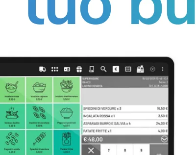

Registratori telematici
Registratori telematici, sistemi di cassa evoluti, POS e assistenza tecnica per negozi e attività commerciali a Siracusa e provincia.
Registratori telematici, POS e sistemi cassa per il commercio
DUEMME S.r.l. affianca negozi, attività commerciali e punti vendita di Siracusa e provincia nella scelta di registratori telematici e sistemi di cassa. Offriamo vendita, fornitura, installazione, configurazione e assistenza tecnica, con il supporto di tecnici abilitati per gli interventi sulle apparecchiature.
La gamma comprende soluzioni di cassa touchscreen, modulari e all-in-one: configurazioni per differenti attività, con periferiche e funzionalità da individuare in base alle esigenze operative. È inoltre possibile richiedere la fornitura di terminali POS per i pagamenti elettronici.
Collegamento POS–RT: forniamo indicazioni e supporto tecnico per agevolare l'adempimento di associazione obbligatoria tra strumenti di pagamento elettronico e registratori telematici. Il collegamento previsto dall'Agenzia delle Entrate è un abbinamento telematico tramite il portale “Fatture e Corrispettivi”, non un collegamento fisico obbligatorio tra dispositivi. L'operazione formale è effettuata dall'esercente o dall'intermediario abilitato con delega.
Esplora alcuni dei nostri modelli
Esplora tutti i modelli disponibili nel catalogo: scegli una marca, oppure cerca per nome. Clicca su un filtro per aprire il catalogo e seleziona una scheda per vedere fotografie e caratteristiche.
Nessun modello corrisponde ai filtri selezionati.
Scopri le nostre offerte
Scopri le offerte sui registratori telematici e sistemi cassa selezionati. Disponibilità e condizioni da confermare.
Esplora le offerteWycash PRO: molto più di un registratore di cassa
Una soluzione software dedicata alla gestione del punto vendita: vendite, pagamenti, clienti e servizi digitali. Scopri le funzionalità e le possibilità di integrazione con i sistemi Wycash.
Scopri Wycash PRO e tutte le funzionalità
Pacchetto annuale di assistenza per registratori telematici
Per aiutare negozi e attività commerciali a mantenere efficienti i propri sistemi di cassa, DUEMME S.r.l. propone un pacchetto di assistenza con durata annuale, gestito da laboratorio e tecnici abilitati.
Domande frequenti
Quali marchi di registratori telematici sono presenti nel catalogo?
Nel catalogo DUEMME puoi consultare modelli Olivetti, Axon e Custom. I modelli pubblicati possono essere aggiornati nel tempo.
Come scegliere un registratore telematico per un negozio?
La scelta dipende dal tipo di attività, dallo spazio disponibile e dalle funzionalità richieste. DUEMME può fornire informazioni sulle soluzioni presenti nel catalogo.
È possibile chiedere informazioni su installazione e assistenza?
Sì. Puoi contattare DUEMME indicando il modello e le tue esigenze per verificare i servizi disponibili.
Richiedi informazioni
Richiedi un preventivo per registratori telematici, sistemi cassa o POS, oppure informazioni sull’assistenza tecnica.
Richiedi preventivo →Informazioni utili per il punto vendita
La scelta di un registratore telematico dipende dall’attività, dallo spazio disponibile e dalle funzioni necessarie al banco cassa.
Come scegliere un registratore telematico?
È utile considerare tipo di attività, numero di operazioni, ingombro, connettività e necessità di integrazione con altri sistemi.
DUEMME offre assistenza sui sistemi cassa?
DUEMME presenta soluzioni per il punto vendita e servizi di assistenza tecnica. Per un intervento specifico occorre verificare modello ed esigenze.